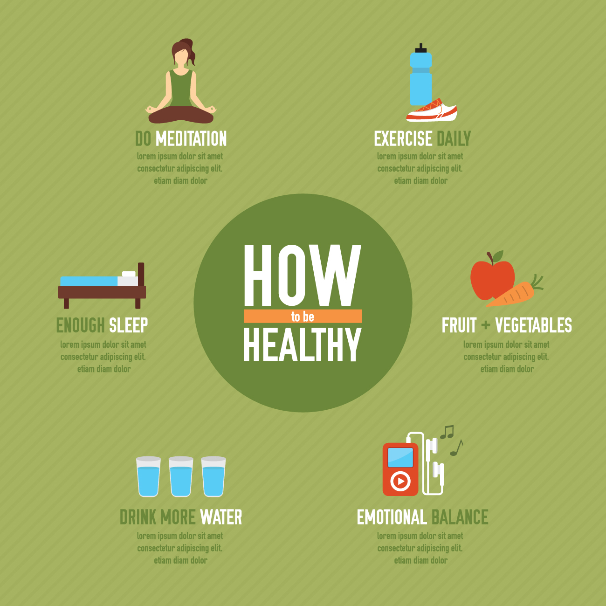

Embrace a healthier lifestyle with small but impactful changes. Here are some simple tips to improve your physical and mental well-being every day.

Top 5 Tips for a Healthier Life:
- Eat a balanced diet rich in fruits, vegetables, and whole grains.
- Stay hydrated by drinking plenty of water throughout the day.
- Exercise regularly to keep your body active and fit.
- Get enough sleep—aim for 7-8 hours every night.
- Practice mindfulness or meditation to reduce stress.